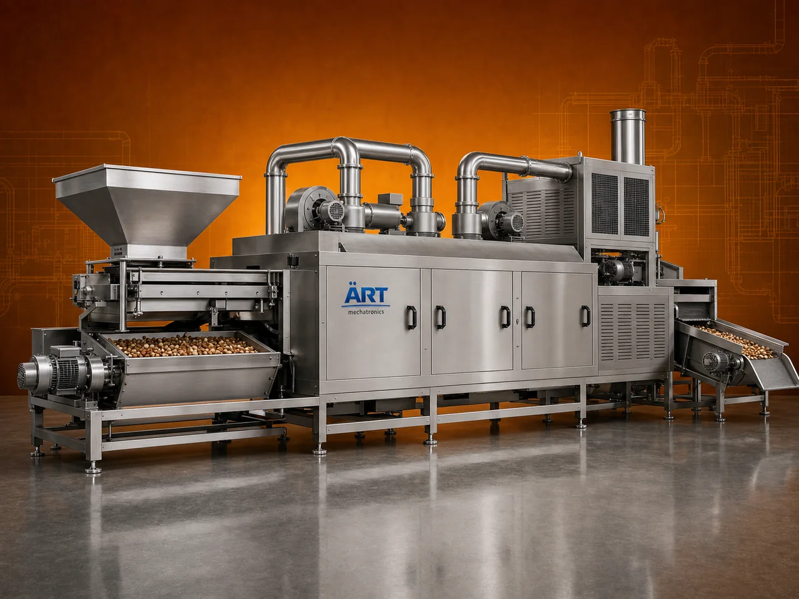

Industrial Roaster Machine (Nut, Seed & Grain Roasting System for Food Processing)
An Industrial Roaster Machine, also known as a Nut Roaster, Seed Roasting Machine, or Food Roasting System, is a specialized equipment designed to roast nuts, dry fruits, grains, seeds, and other granular food products to enhance their flavor, aroma, texture, and crunchiness.

About the Industrial Roaster Machine
Roasting is a critical process in the food and snack industry, as it improves taste, shelf life, digestibility, and product quality, making it essential for products like peanuts, cashews, almonds, sunflower seeds, chana, grains, and spice ingredients.
These machines are engineered for uniform heat distribution, controlled temperature, and consistent roasting, ensuring perfectly roasted products without burning or uneven cooking.
ART Mechatronics offers high-efficiency industrial roaster machines, designed for precision roasting, energy efficiency, and reliable industrial performance.
One machine, many names
Buyers search for this equipment under many terms — we manufacture all of them:
Working Principle of Industrial Roaster
Types of Industrial Roaster Machines
Industries Using Roaster Machine
🍟 Snack Industry
- Namkeen, roasted snacks
🥜 Dry Fruit Industry
- Almonds, cashews, peanuts
🌾 Agro Processing Industry
- Grains and seeds
🌶️ Spice Industry
- Pre-roasting spices
🏭 Food Processing Industry
- Various roasted food products
Features & Advantages
✔ Uniform roasting and heating ✔ Enhanced flavor and crunch ✔ Controlled temperature operation ✔ Suitable for wide range of products ✔ Energy-efficient system ✔ Consistent product quality ✔ Easy operation and maintenance
Technical Highlights
- Capacity: Batch / Continuous (customizable)
- Heating Type: Gas / Diesel / Electric / Hot air
- Construction: Stainless Steel (food grade)
- Operation: Automatic / Semi-automatic
- Temperature Control: Adjustable
- Mixing System: Rotating / Agitated
Turnkey Roasting Solutions
ART Mechatronics offers:
- Complete roasting system design
- Integration with seasoning and packaging lines
- Heating system optimization
- Installation & commissioning
- After-sales service & AMC
Why Choose Art Mechatronics
- Expertise in food processing machinery
- Customized solutions for roasting applications
- High-performance and hygienic machines
- Energy-efficient designs
- Proven performance across industries
Applications
- Snack Processing Plants
- Dry Fruit Processing Units
- Food Manufacturing Units
- Agro Processing Plants
- Spice Processing Units
Industries that use the Industrial Roaster Machine
Related Heating & Drying machines
Get pricing & specs for the Industrial Roaster Machine
Share the product, target capacity, current process and plant location. These details help our engineers discuss the right machine or line configuration.
One partner, from design to start-up
ART Mechatronics designs, manufactures, installs and commissions your Industrial Roaster Machine solution with regional presence in India, UAE and Thailand.